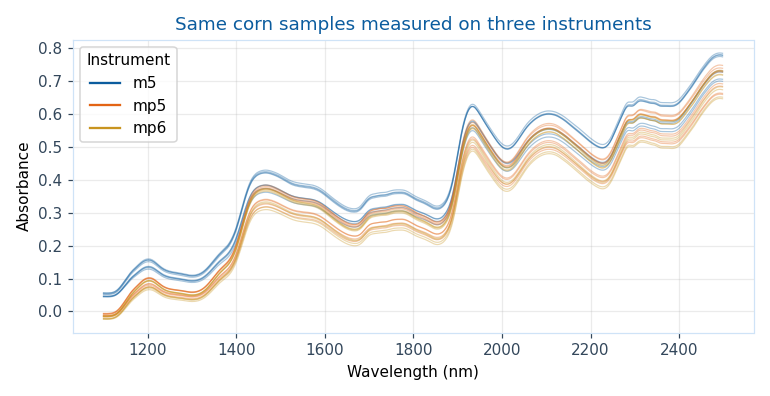
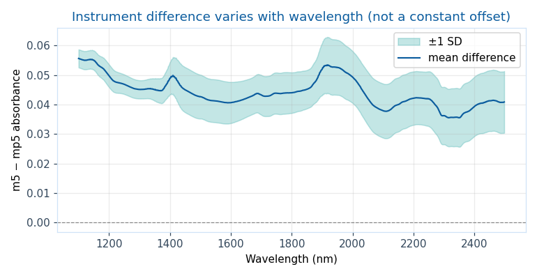
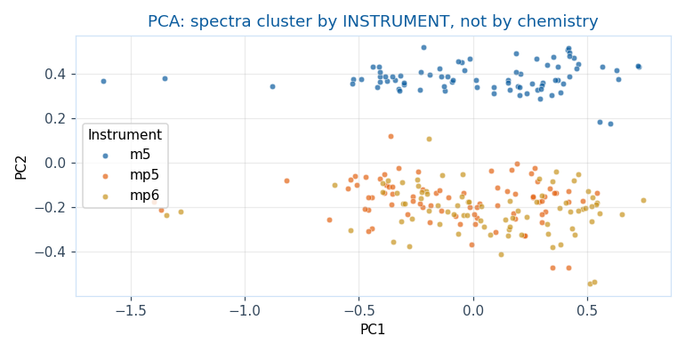
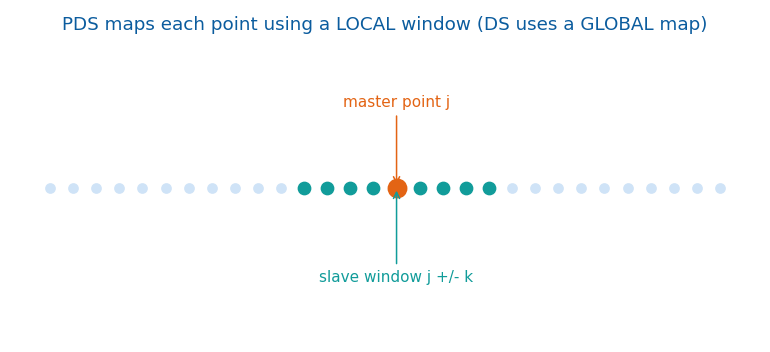
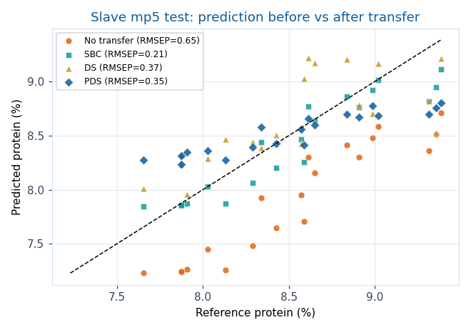
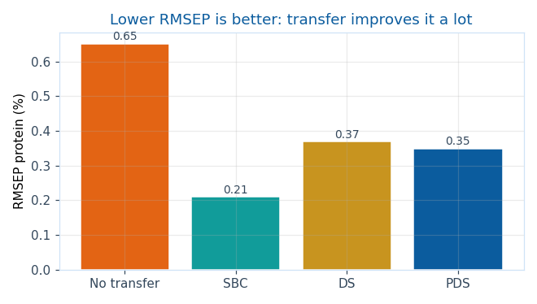

這份教材要解決的問題
你在 A 儀器辛苦建好的 NIR 定量模型，換到 B 儀器就失準。Calibration transfer（校正轉移）就是用少量樣品，把模型「搬」到新儀器而不必整套重建。我們用公開的 Eigenvector corn 資料集：80 個玉米樣品在 m5 / mp5 / mp6 三台儀器量測，1100–2498 nm、共 700 個波長，附 moisture / oil / protein / starch 參考值。
先看見「儀器差異」長什麼樣子
同一批樣品、相同化學成分，只是換了儀器，光譜就不一樣。下圖三種顏色是三台儀器量到的原始光譜——形狀相似但有系統性偏移。

把 m5 減去 mp5，可以看到差異不是一條水平線，而是隨波長變化——這正是為什麼「減一個常數」修不好，需要更聰明的方法。

差異有多大？大到蓋過化學訊號
把三台儀器全部光譜做 PCA。若儀器沒差異，點應該按「化學成分」散開；但實際上，它們先按儀器分成上下兩群。這就是跨儀器直接套模型會壞掉的根本原因。

建立原始校正模型的儀器（這裡是 m5）。
想沿用模型的目標儀器（這裡是 mp5）。
同時在兩台儀器量測的少量共同樣品，用來學轉換關係。
先示範「不做轉移」會多慘
用 m5 前 50 個樣品建 PLS protein 模型，直接拿去預測 mp5 的樣品：RMSEP 高、R² 甚至為負（比直接猜平均值還差）。接著比較三種修正法。
| 方法 | 概念 | 需要 paired 光譜 | 需要標準品的 y 值 |
|---|---|---|---|
| SBC 斜率偏移校正 | 只校正「預測值」：predicted → 線性校正 | 是 | 是 |
| DS 直接標準化 | 用全域線性映射把 slave 光譜變得像 master | 是 | 否 |
| PDS 分段直接標準化 | 每個波長用鄰近視窗局部映射，較有彈性 | 是 | 否 |

結果：轉移前後的預測落差


互動：換一個成分看結論是否一致
點下方按鈕切換目標成分，觀察哪個方法勝出——你會發現「最佳方法會隨成分而變」，沒有萬用解。
| 方法 | RMSEP（越低越好） | R²（越高越好） | 需 paired | 需 y |
|---|
最容易犯的錯
| 錯誤做法 | 後果 | 正確做法 |
|---|---|---|
| 把同一樣品的不同儀器光譜當獨立樣本隨機切分 | 資料洩漏，準確率虛高 | 依 sample_id 分組切分 |
| transfer standards 選太少或分布太窄 | PDS 過度配適，泛化差 | 選涵蓋濃度範圍的代表性標準品 |
| 只用「測量時間」推論標籤/分組 | 混淆變異來源 | 用真正的樣品與成分中繼資料 |
| 假設差異是常數，直接減偏移 | 修不掉波長相依差異（見圖 2） | 用 DS/PDS 學波長相依映射 |
延伸思考（點開看解答）
沒有任何 paired standard 時怎麼辦？
可考慮無標準品法：如 CTAI（affine invariance）、以預處理消除儀器差異（SNV、OSC、FIR），或 domain adaptation / 遷移學習。代價是通常較不穩定，需更謹慎驗證。
PDS 的 window size 該怎麼選？
視窗太小→無法涵蓋波長偏移；太大→退化成全域 DS 並易過擬合。實務上用交叉驗證掃描半視窗寬度 k，挑 RMSEP 最低且穩定者。
為什麼 SBC 的 R² 有時最高，卻不一定是最佳選擇？
SBC 需要標準品的參考 y 值（較貴、較難取得），且只校正輸出、不修光譜本身。當你拿不到標準品 y、或想讓轉移後光譜可再做別的分析時，DS/PDS 更實用。
5 題快速檢測
點選你的答案，立即看回饋。
三條學習路線
本機 Anaconda / JupyterLab，開
notebooks/…_jupyter.ipynb。免安裝，一鍵開啟，資料自動下載。
不寫程式，用 widget 拖拉做 PCA 與儀器差異視覺化。
Python 核心流程
- 下載
corn.mat，解析 m5/mp5/mp6 光譜。 - Savitzky–Golay 平滑 + SNV 作為基礎前處理。
- 用 m5 前 50 個樣品建 PLS protein 模型。
- 用 10 個 paired standards 學 slave→master 轉換。
- 用 mp5 後 20 個樣品做獨立測試。
- 比較 no transfer、SBC、DS、PDS 的 RMSEP 與 R²。
python analysis_script.py
Orange Data Mining 課堂活動
- 安裝 Orange 與（可選）Orange Spectroscopy add-on。
- File → 載入
corn_nir_for_orange.csv。 - Select Columns：
wl_*為 features，Protein為 target，sample_id、instrument為 meta。 - PCA → 用 instrument 上色，重現圖 3 的儀器分群。
- Select Rows 分出 m5 / mp5，比較跨儀器預測落差。
- 把 Python 轉移後的光譜匯回 Orange，視覺化 PDS 前後變化。
術語速查
預測均方根誤差，越低越準。
偏最小平方回歸，NIR 定量主力。
標準正態變量，消散射造成的乘性/加性效應。
多項式平滑/微分，降噪並凸顯特徵。
資料來源
Eigenvector Research, “NIR of Corn Samples for Standardization Benchmarking”：eigenvector.com/resources/data-sets
背景閱讀：Zhao et al., Molecules 2019, PLS Subspace-Based Calibration Transfer for NIR Quantitative Analysis, DOI: 10.3390/molecules24071289。